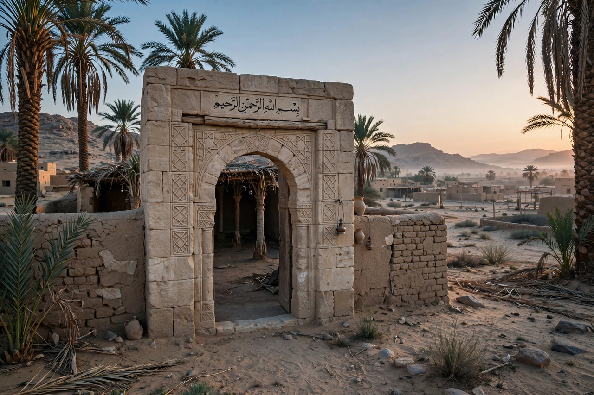

| Umar ibn al-Khattab | |
 | |
| Reign | 23 August 634 – 6 November 644 |
|---|---|
| Predecessor | Abu Bakr |
| Successor | Uthman |
| Born | c. 584, Mecca, Hejaz, Arabia |
| Died | 6 November 644 (aged ~60), Medina, Rashidun Caliphate |
| Title | Amir al-Mu'minin ("Commander of the Faithful"); al-Farooq |
Umar ibn al-Khattab (Arabic: عمر بن الخطاب, romanized: ʿUmar ibn al-Khaṭṭāb; c. 584 – 6 November 644), also spelled Omar, was the second Rashidun caliph, ruling from 634 until his assassination in 644. He succeeded Abu Bakr (r. 632–634) as caliph and is one of the most powerful and influential Muslim caliphs in history. In Sunni tradition he is revered as a great just ruler and a paragon of Islamic virtue, and he is regarded as one of the ten Companions of Muhammad promised paradise.
Under Umar, the caliphate expanded at an unprecedented rate, conquering the Sasanian Empire and more than two-thirds of the Byzantine Empire. His armies defeated the Sasanians at al-Qadisiyyah (636) and Nahavand (642), completing the conquest of Persia, while other forces took Syria, Egypt, and parts of Anatolia and North Africa. Umar also instituted major administrative reforms — including the dīwān register of stipends, provincial governorships, and the Islamic (Hijri) calendar — that laid the institutional foundations of the Islamic state.
Umar was born in Mecca around 584 into the Banu Adi clan of the Quraysh tribe. His father was al-Khattab ibn Nufayl and his mother Hantamah bint Hisham, of the Banu Makhzum. A tall, physically strong man, Umar was literate — a rarity in pre-Islamic Arabia — and worked as a merchant, travelling to Syria and Yemen. Initially a fierce opponent of Islam who, by traditional accounts, persecuted its followers, he converted around 616 (the sixth year of Muhammad's prophethood), after which he became one of the faith's most open defenders, earning from Muhammad the title al-Farooq, "the one who distinguishes between right and wrong."
Umar participated in the migration (Hijra) to Medina in 622 and fought in the major battles of the early community, including Badr (624) and Uhud (625). His daughter Hafsa married Muhammad. After Muhammad's death in 632, Umar played a decisive role in securing the succession of Abu Bakr at the Saqifa. Under Abu Bakr he was a chief adviser during the Ridda wars, and he is traditionally credited with urging the compilation of the Qur'an into a single manuscript after heavy losses among its memorizers at the Battle of Yamama.
On the death of Abu Bakr in August 634, Umar succeeded him. Muslim armies under generals such as Khalid ibn al-Walid, Sa'd ibn Abi Waqqas, Abu Ubayda ibn al-Jarrah, and Amr ibn al-As won decisive victories: at Yarmouk (636) against the Byzantines, opening Syria; at al-Qadisiyyah (636), leading to the fall of Ctesiphon and Iraq; and in Egypt (639–642) under Amr. Jerusalem surrendered to Umar in person in 637/638, an event associated with the document known as the Covenant or Assurance of Umar, guaranteeing the safety of the city's people and churches. The final Sasanian resistance ended after Nahavand (642), called the "Victory of Victories."
Umar organized the conquered territories into provinces with appointed governors (amirs), judges (qadis), and financial officers, and kept careful oversight of officials' conduct. He established the dīwān, a register assigning stipends (ʿaṭāʾ) to Muslims according to precedence in Islam and military service, and founded garrison cities (amṣār) such as Basra, Kufa, and Fustat. He is credited with adopting the Hijra as the epoch of the Islamic calendar (see Lunar calendar), instituting public treasuries, census-taking, and regulations for markets and public morality (an early form of the ḥisba). Non-Muslim subjects were governed under the dhimma system, paying the jizya tax in return for protection.
Umar was assassinated in Medina on 3 or 6 November 644 by Abu Lu'lu'a Firuz, a Persian slave who stabbed him during the dawn prayer in the Prophet's Mosque, reportedly over a grievance about a tax imposed by his master. Umar died of his wounds days later and was buried beside Muhammad and Abu Bakr. Before dying, he appointed a council of six (the shura) to choose his successor, which selected Uthman.
Umar's ten-year reign is remembered in Islamic historiography as a golden age of justice and expansion. His legal opinions and administrative precedents deeply shaped classical Islamic law and governance, and cities he founded remain major centres today.
See also: Rashidun Caliphate, Abu Bakr, Uthman, Muslim conquest of Persia